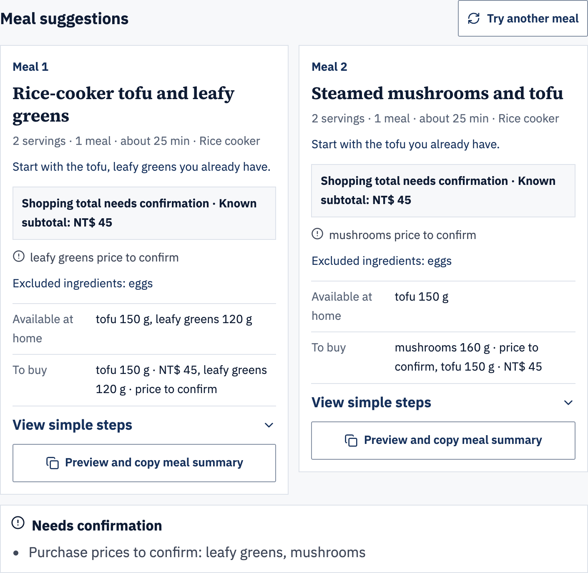

04 · PRICE HONESTY
OVER BUDGET
The known must-buy subtotal already exceeds the budget. Stop recommending and offer trade-offs.
UNKNOWN
Any needed price or amount is missing. Show the known subtotal and list the missing items.
WITHIN BUDGET, BASED ON SUPPLIED PRICES
Every price is known and the total fits. Never stated as a guarantee of the checkout price.
Foods already at home add NT$0 of new purchases, but are never called free.

Live GPT-6 Luna session, synthetic case. The cards show the known NT$45 subtotal and identify the missing greens or mushroom price.
WORKED EXAMPLE
Tofu NT$45 is known. Greens price is missing. Is the meal within NT$80? Unknown, not “yes”.
CareKitchen · WAICY 2026 · Track 4: LLM & AI Agent